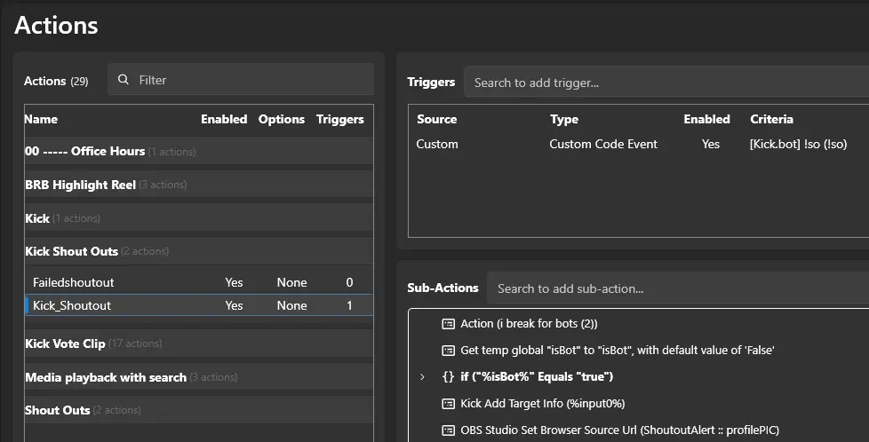
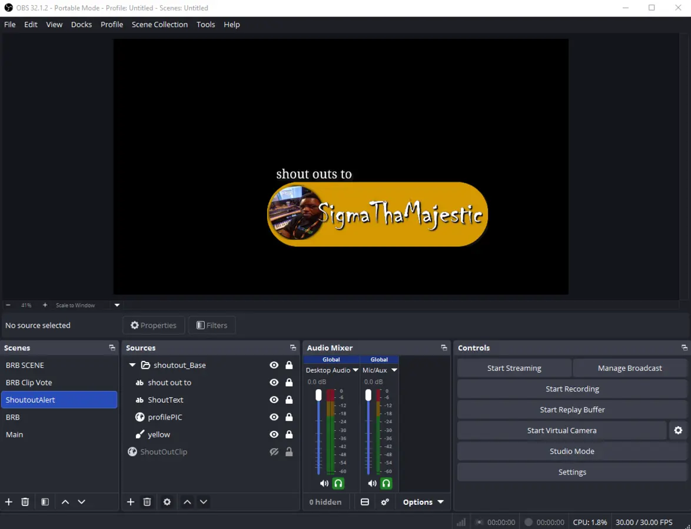

Corrected version based on your current working setup
Credit
With thanks to VRFlad and the Streamer.bot / Kick.bot community for the original shoutout idea and workflow.
Important corrections for this version
The downloadable import file contains 2 Streamer.bot actions: Kick_Shoutout and Failedshoutout.
For the OBS browser URL target, the source name used in the action should be only: profilePIC.
1. What this setup does
When the Kick shoutout action is triggered, Streamer.bot grabs the target user information, updates the browser/media source, and displays the shoutout visual in OBS.
!so username
-> Kick_Shoutout runs
-> gets target info
-> updates profilePIC in OBS
-> shows the shoutout scene/source
-> if something fails, Failedshoutout handles the fallback
2. Requirements
OBS Studio
Streamer.bot connected to OBS
Kick.bot installed and working
The shoutout HTML / browser setup already prepared
The imported Streamer.bot action file that contains Kick_Shoutout and Failedshoutout
3. Import the Streamer.bot actions
Import the shoutout download file into Streamer.bot. After import, under your Kick ShoutOuts group, you should only see these two actions:
| Action name | Purpose |
|---|---|
| Kick_Shoutout | Main shoutout action. This is the one you trigger. |
| Failedshoutout | Fallback action if the shoutout cannot complete properly. |

Action list and trigger view. The corrected package only includes Kick_Shoutout and Failedshoutout.
4. OBS setup
| Item | Name to use | Notes |
|---|---|---|
| Scene | ShoutoutAlert | The scene that contains your shoutout alert. |
| Profile Image | profilePIC | This displays the target’s profile picture. |
Browser Source Text Source |
ShoutOutClip ShoutText |
Loads the clip/player URL from Streamer.bot. Optional username/title text. |

OBS example scene.
5. Main Kick_Shoutout action
Your main action uses one trigger and then runs through a short sequence. Keep it simple.
| Part | What it does |
|---|---|
| Trigger | Custom Code Event: [Kick.bot] !so (!so) |
| Bot check | Skips bot accounts if needed. |
| Kick Add Target Info | Reads the user you want to shout out. |
| OBS browser/source update | Sets the URL or profile image target in OBS using ShoutoutAlert :: profilePIC. |
| Show / delay / hide | Displays the shoutout long enough to be seen. |
| Fallback | If something goes wrong, call Failedshoutout. |
Kick_Shoutout
Action (i break for bots (2))
Get temp global isBot -> if true, break
Kick Add Target Info (%input0%)
OBS Studio Set Browser Source URL (ShoutoutAlert :: profilePIC)
Delay
Optional show / hide steps
If needed -> Failedshoutout
6. Exact naming note
Streamer.bot and OBS source references must match exactly.